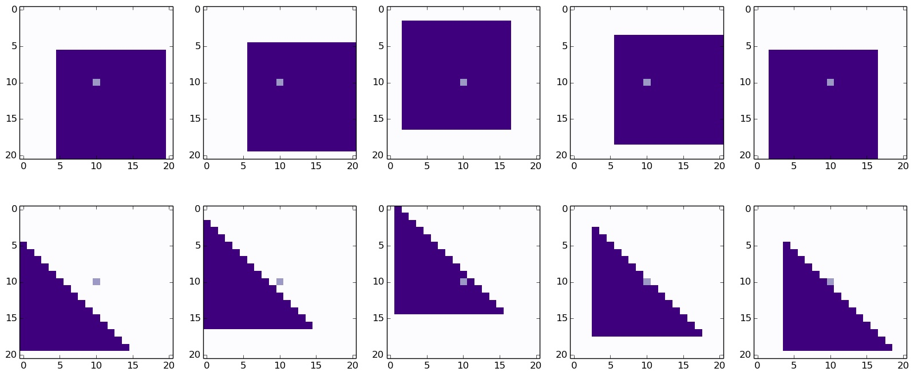

The EM Algorithm is used when we would like to do maximum likelihood
(or MAP) estimation but our model has hidden variables i.e.
variables that we cannot observe but that we believe are involved in
the generation of the data. For instance, it may be the case that we
believe that there is a correlation between people having eczema and
asthma, but we may not believe that any of these two causes the other.
We may instead believe that they are both caused by the presence of
some allele in a persons DNA (by the way, I do not claim to know
anything about biology or genetics so take this with a grain of salt).
The presence of this could be the latent variable, but we may never see
this in most people.
In this case, we have the visible variables, lets denote them as \(x\)
(the presence of eczema and asthma),
and the hidden variables, denoted by \(z\) (the allele). We would
like to maximise
the marginal likelihood over the visible variables i.e. we want to
solve the following
$$
\theta^* = \arg \max_{\theta} \log p(x|\theta) = \arg \max_{\theta}
\log \sum_{z} p(x, z|\theta).
$$
Due to the presence of the summation in the log, this is actually a
very difficult problem to solve. We cannot solve for it directly.
Instead, the usual way to solve this is using the aforementioned
EM algorithm or the Expectation Maximisation
algorithm.
Derivation
The EM algorithm can be derived in the following way. We want to
maximise the log likelihood of the visible data i.e.
$$
l(\theta) = \log \sum_{z} p(x, z|\theta),
$$
for each datapoint \(x\) in the data set, so we do this very neat
(and completely unintuitive) trick. We introduce a distribution over the
hidden variables, \(q(z)\) and multiply and divide by it in the
summation, as such
$$
\begin{align}
l(\theta) &= \log \left(\sum_{z} q(z) \frac{p(x, z|\theta)}{q(z)}\right)
\\
&\geq \sum_{z} q(z) \log\left(\frac{p(x, z|\theta)}{q(z)}\right).
\end{align}
$$
The inequality is present by applying Jensen's inequality.
Now there are two ways to view this equation. Since this will turn out
to be an iterative algorithm, we will call the parameters at iteration
\(t\), \(\theta^t\). At iteration \(t\) we then have that
$$
\begin{align}
l(\theta^t) &\geq \sum_{z} q(z)
\log\left(\frac{p(x, z|\theta^t)}{q(z)}\right)
\\
&= \sum_{z} q(z) \log \left(\frac{p(z|x, \theta^t)}{q(z)} \right)+ \log p(x|\theta^t)
\\
&= -\text{KL}\left(q(z)|| p(z|x, \theta^t) \right) + \log p(x|\theta^t).
\end{align}
$$
We know that the KL divergence is always non-negative and it is zero
when \(q(z) = p(z|x, \theta^t)\). Therefore, we maximise this with
respect to \(q(z)\) (keeping \(\theta^t\) fixed) by setting
these as equal. When this is the case, the lower bound on the
log-likelihood of the visible data is tight i.e. there is equality
because \(l(\theta^t) = \log p(x|\theta^t)\) by definition.
We can also view this in another way, however. Let's rewrite the above
(after setting \(q(z) = p(z|x, \theta^t)\)) as
$$
\begin{align}
l(\theta^t) &= \sum_{z} p(z | x, \theta^t) \log \left(p(x, z|\theta^t)
\right) - \sum_{z} p(z | x, \theta^t) \log \left(p(z | x, \theta^t)\right)
\\
&= \sum_{z} p(z | x, \theta^t) \log \left(p(x, z|\theta^t) \right) + H(p(z | x, \theta^t) )
\\
&= \mathbb{E}_{p(z | x, \theta^t)} \left[ \log \left( p(x, z| \theta^t) \right) \right] + H( p(z | x, \theta^t) ).
\end{align}
$$
Now, if we allow the parameters of \(p(x, z | \theta^t)\) to be free,
but still keep \(q(z) = p(z | x, \theta^t)\), then we get the following
$$
\begin{align}
l(\theta) &\geq \sum_{z} p(z | x, \theta^t) \log \left(p(x, z|\theta \right) + H(p(z | x, \theta^t) )
\\
&= \mathbb{E}_{p(z | x, \theta^t)} \left[ \log \left( p(x, z| \theta) \right) \right] + H( p(z | x, \theta^t) ).
\end{align}
$$
The inequality is true because, we showed above that it is true for
any value of \(q(z)\), even when it is equal to \(p(z | x, \theta^t)\).
We can then maximise the right hand side with respect to \(\theta\)
(remember, we fix \(\theta^t\)). To do this, we don't really need to
take the entropy (\(H(p(z | x, \theta^t))\)) into account, since it is
not a function of \(\theta\). Let us define an auxiliary function
$$
Q(\theta, \theta^t) = \mathbb{E}_{p(z | x, \theta^t)} \left[ \log p(x, z|\theta) \right].
$$
We then maximise this with respect to \(\theta\) i.e.
$$
\theta^{t+1} = \arg \max_{\theta} Q(\theta, \theta^t)
$$
then we repeat. So, basically, the EM algorithm iterates over two steps.
At iteration \(t\) we make the lower bound tight, which we do by setting
\(q(z) = p(z|x, \theta^t)\). This is needed to take the
expected complete log likelihood over the visible data,
which is why it
is called the Expectation step. We then *maximise* this with respect to
\(\theta\), which is why this is called the Maximisation step. We can
prove that this always is guaranteed to increase the log likelihood of
the visible data (until it converges). This is because
$$
\begin{align}
l(\theta^t) &= Q(\theta, \theta^t) + H(p(z | x, \theta^t))
\\
&\leq Q(\theta^{t+1}, \theta^t) + H(p(z | x, \theta^t))
\\
&=
-\text{KL}\left(p(z|x, \theta^t)|| p(z|x, \theta^{t+1}) \right)
+ \log p(x|\theta^{t+1})
\\
&\leq l(\theta^{t+1})
\end{align}
$$
which means that \(l(\theta^t)\leq l(\theta^{t+1})\), for all \(t\).
This means that at each iteration of the EM algorithm, the parameters
become better explanations of the data (if we are doing maximum
likelihood) or at least do not become worse.
The catch
The EM algorithm only guarantees that we will reach a local
optimium. This means that there may have been better parameters to
increase the likelihood but because it guarantees that it will never
decrease, it will never reach them (because to get there it would have
to temporarily decrease). For this reason, it is sometimes useful to
do the algorithm a couple of times starting from different initial
parameters and then choose the one that maximises the likelihood
(or use cross validation).
However, it works well in practice and it is used extensively in
machine learning and statistics.
Example: Mixture of Bernoulli
A lot of textbooks stop at this point it seems or give the EM algorithm
for a Mixture of Gaussians, so I have decided to show a concrete example
on a Mixture of Bernoulli (MoB) distribution.
A MoB distribution is a model for multivariate binary data which takes
the form
$$
p(x, z) = p(x | z) p(z) = \prod_{k=1}^K
(p(z = k) p(x | z = k))^{\mathbb{I}(z = k)},
$$
where \(z \in \{1, 2, \dots, K\}\), is the latent variable i.e. we
don't see it, and \(x \in \{0, 1\}^D\), which is visible. The
generative process can be thought of first picking a value for \(z\)
from a a categorical distribution and then generating an \(x\) from
a multivariate Bernoulli distribution, whose parameters depend on the
value of \(z\). Each multivariate Bernoulli distribution,
\(p(x | z = k)\), makes an independence assumption about the features
in \(x\) i.e. given the value of \(z\), we assume all the features of
\(x\) are independent, as such
$$
p(x|z=k) = \prod_{d=1}^D p(x_d = 1|z=k)^{x_d}
(1 - p(x_d = 1|z=k))^{1-x_d}.
$$
Now, this may seem like a very strong assumption, but it still can model
some things. For example, suppose that we want to model a multivariate
binary variable, whose dimension is \(D = L^2 = 21^2 = 441\) and
represents an \(L\times L\) image of either a square or a triangle,
whose length, \(l\), is
equal to 15 and it is randomly placed within this grid. Some sample
images can be seen below.

The pixels that are coloured dark purple are equal to 1 and the white
background pixels are equal to zero. The middle pixel is coloured in a
light purple. We can think of the generative process as first choosing
whether a triangle or a square will be generated, and then choosing
where to place the shape. The choice between the triangle and the square
can be encoded by \(z\) and then once we choos the shape, we can
generate it by sampling from the associated Bernoullis.
Let \(z=1\) denote a square and \(z=2\) denote a triangle. If we pick a
square, we can see that the middle pixel is always going to be one
(since the square has length 15 and the canvas has length only 21,
which means that the 10th pixel will always be covered by the square).
This means that \(p(x = 1| z = 1) = 1\). However, when \(z=2\) we can
see from som of the examples below that this is not the case, and we can
also see that for any pixel in the top right corner \(p(x =1 | z=2)
= 0\) (the pixels are always zero). Of course, it is clear that given \(z\) the
dimensions are still highly dependent, but this is just an illustration
which is easy to visualise, which is why I chose it.